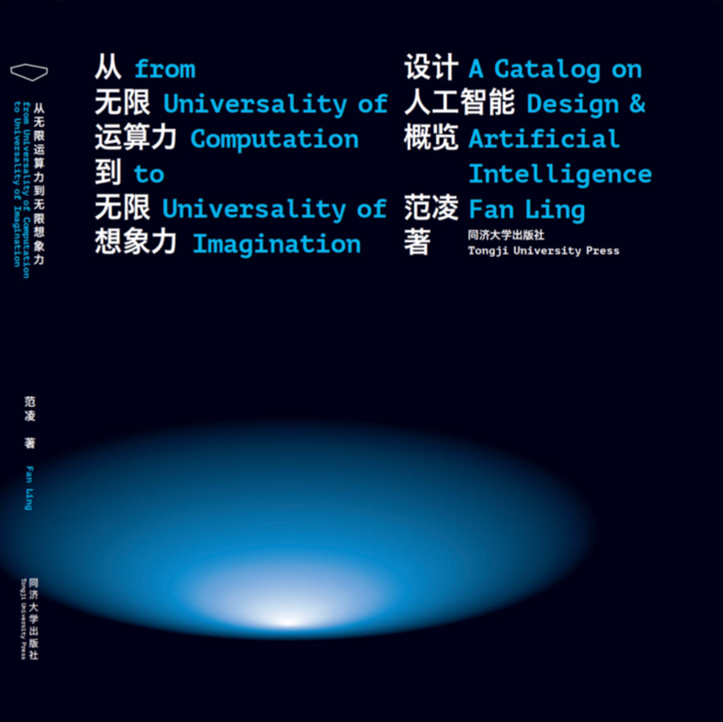
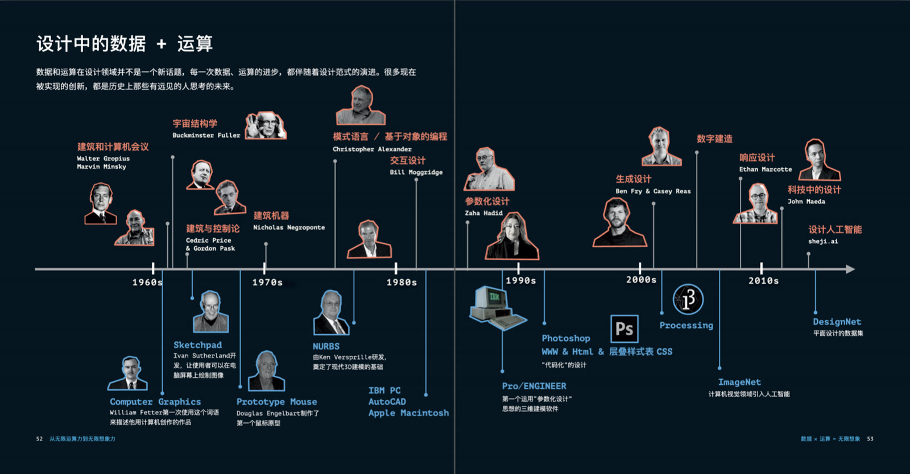
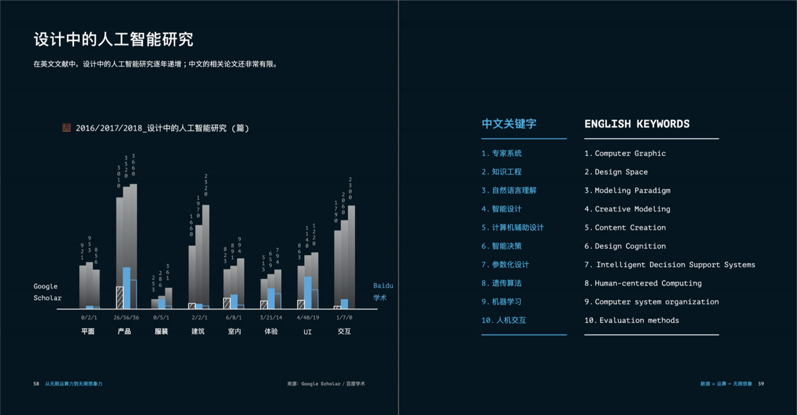
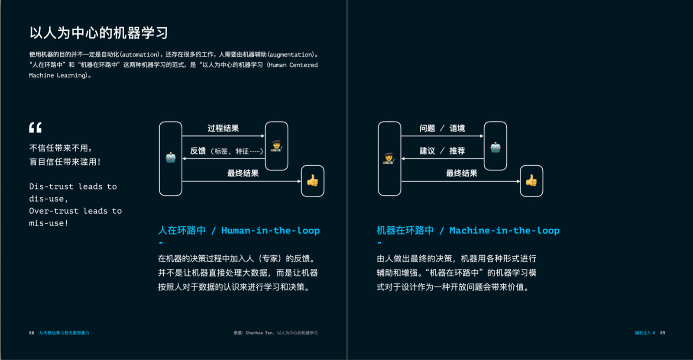
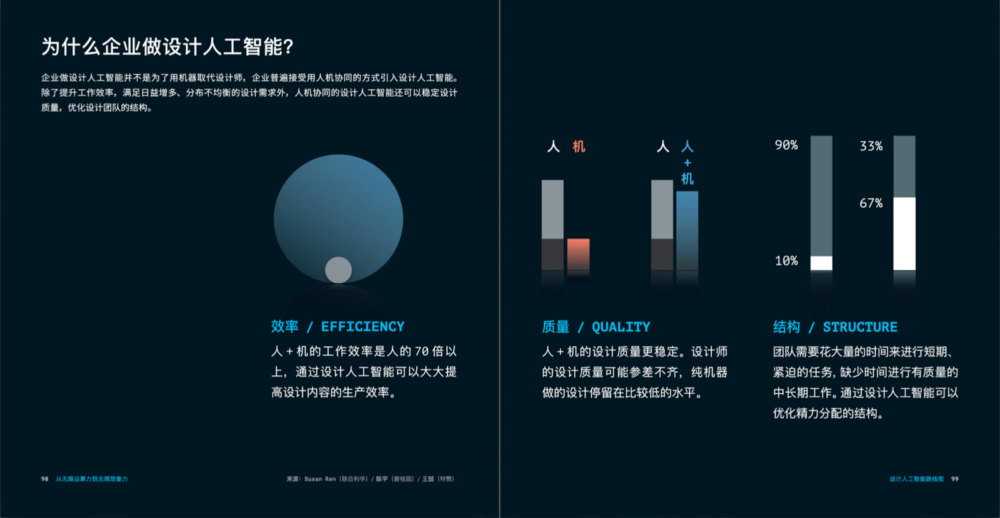
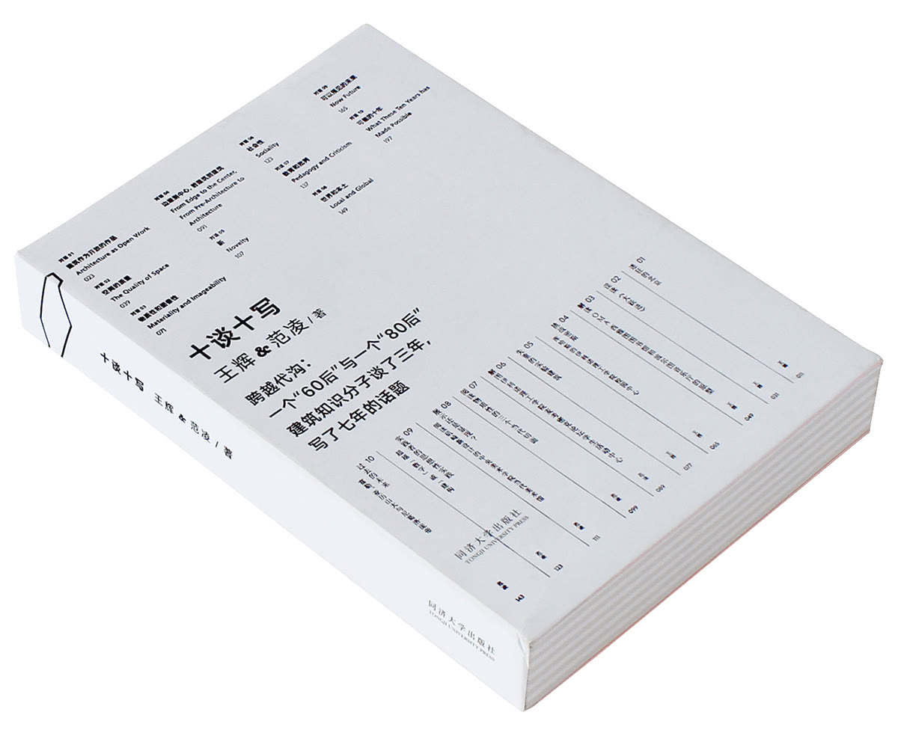
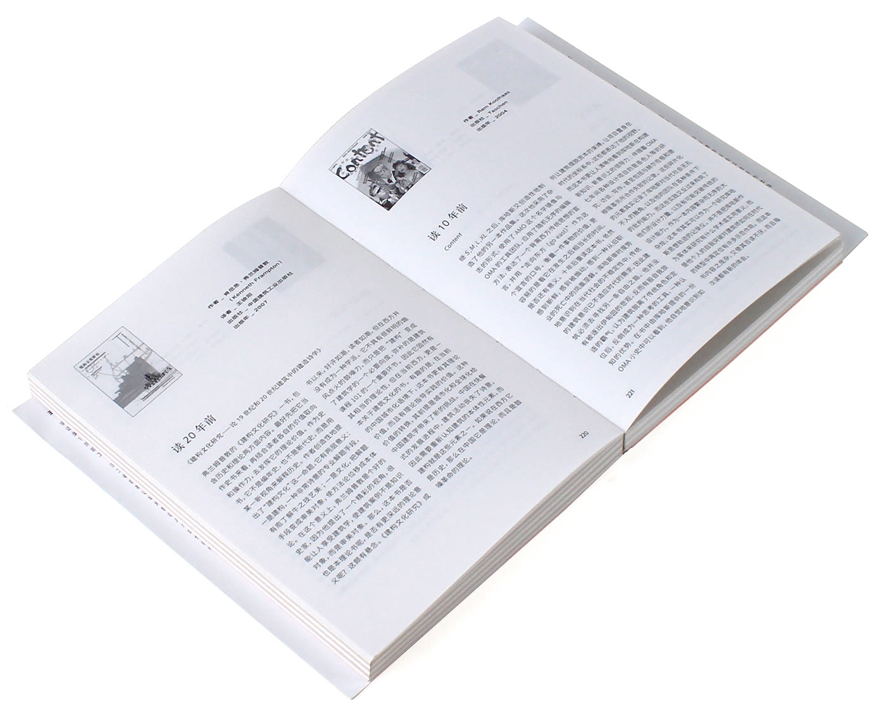

Writing
Blog, books and publications
Blog
Fatflatfloat ↗
Ling's blog on Substack, on design, AI and education, in English and Chinese.
Books

2019 · Tongji University Press
From Universality of Computation to the Universality of Imagination: A Catalog on Design and Artificial Intelligence





2014 · Tongji University Press
Ten Dialogues: Hui Wang × Ling Fan

Publications
Authored or co-authored more than 100 articles and papers in academic journals, professional magazines and conference proceedings.
Journal Articles
| 2026 | Xia, L., Li, X., Wang, Z., Chen, H., Zhu, X., & Fan, L. DMSAA-SLAM: RGB-D SLAM for dynamic scenes via diffusion self-attention. Pattern Recognition, 179(Part A), 113576. doi:10.1016/j.patcog.2026.113576 |
| 2022 | Fan, L., Li, D., Zhuo, J., Yan, S., & Gong, S. AI empowering the inheritance of traditional craft art: A case study of Jinshan farmer paintings. Decoration, (7), 94–98. [In Chinese] doi:10.3969/j.issn.0412-3662.2022.07.014 |
| 2019 | Yu, T., Guo, J., Li, W., Wang, H. J., & Fan, L. Recommendation with diversity: An adaptive trust-aware model. Decision Support Systems, 123, 113073. doi:10.1016/j.dss.2019.113073 |
| 2010 | Fan, L., Brazier, C., & Lam, T. Becoming Beijing: Developer-architect dynamics in socio-political context. Architecture and Urbanism (A+U), (7), 94–99. |
| 2007 | Fan, L., & O’Donnell, C. Interview with Peter Eisenman. Time + Architecture, 2007(6), 112–117. |
| 2007 | Eisenman, P. Aspects of modernism: Maison Dom-ino and the self-referential sign (L. Fan, Trans.). Time + Architecture, 2007(6), 106–111. |
Refereed Conference Papers
| 2026 | Xia, L., Li, X., Fan, J., Li, D., & Fan, L. The Wetland Quest: Fostering empathy and literacy for urban herpetofauna through VR wetland exploration. In Proceedings of the 2026 CHI Conference on Human Factors in Computing Systems (CHI ’26), Article 1559, 1–15. ACM. doi:10.1145/3772318.3790443 |
| 2026 | Pei, Y., & Fan, L. Evaluating creative efficacy in human-AI design convergence: An experimental study of support modes. In DRS2026: Edinburgh. Design Research Society. doi:10.21606/drs.2026.1125 |
| 2026 | Xia, L., Li, X., Li, D., & Fan, L. Design for dignified longevity: Olfactory-enhanced VR meditation for sustained mindfulness practice. In DRS2026: Edinburgh. Design Research Society. doi:10.21606/drs.2026.672 |
| 2026 | Xia, L., Li, X., Li, D., Zhang, S., Fan, J., & Fan, L. VLA-Ethos: Designing ethical vision-language-action models for inclusive education. In Learning and Collaboration Technologies: HCII 2026 (LNCS 16731, pp. 514–529). Springer. doi:10.1007/978-3-032-30542-8_32 |
| 2025 | Xia, L., Li, X., Fan, J., & Fan, L. Designing AR-based warehouse management systems using the PECI framework: A comparative user study of interface performance and experience. In IASDR 2025: Design Next. Design Research Society. doi:10.21606/iasdr.2025.818 |
| 2025 | Li, X., He, Z., Xi, L., Zeng, S., Zhang, D., & Fan, L. Generative AI meets creative design: Shaping a dynamic learning ecosystem. In IASDR 2025: Design Next. Design Research Society. doi:10.21606/iasdr.2025.520 |
| 2025 | Li, D., Xia, L., & Fan, L. Aug-Creativity: Framework for human-centered creativity with vision language models. In Human-Computer Interaction: HCII 2025 (LNCS 15770, pp. 86–101). Springer. doi:10.1007/978-3-031-93864-1_7 |
| 2025 | Xia, L., Hu, Y., Li, X., Li, D., Zeng, S., & Fan, L. Enhancing altruistic behavior through virtual reality: The impact of immersive environments and digital embodiment on prosocial tendencies. In Virtual, Augmented and Mixed Reality: HCII 2025 (LNCS 15789, pp. 245–259). Springer. doi:10.1007/978-3-031-93712-5_15 |
| 2024 | Xia, L., Li, X., Qin, Y., Li, D., & Fan, L. Enhancing design education through spatial computing: A comparative study of traditional and immersive technologies in chair design projects. In 2024 IEEE Frontiers in Education Conference (FIE), 1–8. IEEE. doi:10.1109/FIE61694.2024.10893086 |
| 2024 | Li, X., Xia, L., He, Z., Wu, P., Chen, D., & Fan, L. Enhancing interior design education through the integration of AIGC tools: A novel “Creator-Thon” approach. In 2024 IEEE Frontiers in Education Conference (FIE), 1–8. IEEE. doi:10.1109/FIE61694.2024.10893341 |
| 2024 | He, Z., Zou, X., Wu, P., Fan, L., & Li, X. Creating and experiencing 3D immersion using generative 2D diffusion: An integrated framework. In 2024 IEEE International Conference on Multimedia and Expo Workshops (ICMEW), 1–6. IEEE. doi:10.1109/ICMEW63481.2024.10645466 |
| 2021 | Zheng, C., Zhang, K., Wang, H. J., Fan, L., & Wang, Z. Enhanced Seq2Seq autoencoder via contrastive learning for abstractive text summarization. In 2021 IEEE International Conference on Big Data (Big Data), 1764–1771. IEEE. doi:10.1109/BigData52589.2021.9671819 |
| 2021 | Li, Y., Zhuo, J., Fan, L., Wang, Z., & Wang, H. J. Semantically enriched music visualization via multimodal color generation. In Proceedings of the International Conference on New Interfaces for Musical Expression (NIME 2021). doi:10.21428/92fbeb44.2fb614f7 |
| 2021 | Fan, L., Bao, Y., Gong, S., Yan, S., & Wang, H. J. The brain-machine-ratio model for designer and AI collaboration. In 2021 IEEE 4th International Conference on Multimedia Information Processing and Retrieval (MIPR), 308–313. IEEE. doi:10.1109/MIPR51284.2021.00058 |
| 2021 | Li, Y., Zhuo, J., Fan, L., & Wang, H. J. Culture-inspired multi-modal color palette generation and colorization: A Chinese youth subculture case. In 2021 IEEE 4th International Conference on Multimedia Information Processing and Retrieval (MIPR), 382–385. IEEE. doi:10.1109/MIPR51284.2021.00071 |
Extended Abstracts and Posters
| 2025 | Xia, L., Li, X., Zeng, S., Chen, D., & Fan, L. Navigating stakeholder tensions in spatial computing: A participatory design approach for inclusive mixed reality environments. In Extended Abstracts of the CHI Conference on Human Factors in Computing Systems (CHI EA ’25), Article 415, 1–6. ACM. doi:10.1145/3706599.3720268 |
| 2025 | Li, X., Wu, P., He, Z., Li, J., & Fan, L. Multi-agent AI: Collaborative design with multiple AI tools in interior design workflow. In HCI International 2024 – Late Breaking Posters (CCIS 2320, pp. 202–211). Springer. doi:10.1007/978-3-031-78531-3_23 |
| 2025 | Li, X., He, Z., Wu, P., Li, J., & Fan, L. A computational aesthetic measurement framework for AI design: A case study of office space design. In HCI International 2024 – Late Breaking Posters (CCIS 2320, pp. 212–220). Springer. doi:10.1007/978-3-031-78531-3_24 |
| 2025 | Wu, P., Li, X., He, Z., & Fan, L. AdvisorAI: Transforming graphic advertising with generative AI-enhanced design strategies. In HCI International 2024 – Late Breaking Posters (CCIS 2320, pp. 295–304). Springer. doi:10.1007/978-3-031-78531-3_32 |
| 2024 | He, Z., Li, X., Wu, P., Fan, L., Wang, H. J., Wang, N., Li, M., & Chen, Y. Generating architectural floor plans through conditional large diffusion model. In HCI International 2024 Posters (CCIS 2120, pp. 53–63). Springer. doi:10.1007/978-3-031-62110-9_6 |
| 2023 | Fan, L., Wang, H. J., Zhang, K., Pei, Z., & Li, A. Towards an automatic prompt optimization framework for AI image generation. In HCI International 2023 Posters (CCIS 1836, pp. 405–410). Springer. doi:10.1007/978-3-031-36004-6_55 |
| 2023 | He, Z., Li, X., Fan, L., & Wang, H. J. Revamping interior design workflow through generative artificial intelligence. In HCI International 2023 Posters (CCIS 1835, pp. 607–613). Springer. doi:10.1007/978-3-031-36001-5_78 |
Preprints
| 2020 | Zheng, C., Zhang, K., Wang, H. J., & Fan, L. A two-phase approach for abstractive podcast summarization. arXiv:2011.08291 |
| 2020 | Zhuo, J., Fan, L., & Wang, H. J. A framework and dataset for abstract art generation via CalligraphyGAN. arXiv:2012.00744 |
| 2020 | Zheng, C., Wang, H. J., Zhang, K., & Fan, L. A baseline analysis for podcast abstractive summarization. arXiv:2008.10648 |
Book Chapters, Professional Articles, and Reports
| 2019 | Fan, L. Cross-disciplinary integration of art and design with artificial intelligence. People’s Daily. |
| 2017–2019 | Tongji Design AI Lab & Tezign. Design and A.I. Report, annual editions 2017, 2018, 2019. |
| 2015 | Fan, L. The “contemporary” as a case. In J. Shi (Ed.), New observations: Essays in architectural criticism. Tongji University Press. |
| 2013 | Fan, L. Spatialization of the collective: The logic and dialectics of urban forms in China. In C. C. M. Lee (Ed.), Xiamen: The megaplot (Common Frameworks: Rethinking the Developmental City in China, Pt. 1, pp. 45–60). Harvard University Graduate School of Design. |